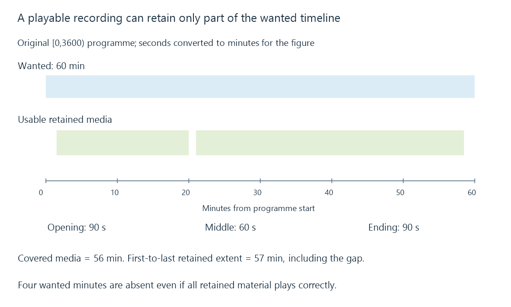

Incomplete recordings and missing programme intervals
An incomplete recording lacks part of the intended programme coverage, even when its remaining container parses, its media plays and a recording item is visible.
A recording can play from beginning to end and still be incomplete. The player can present every retained packet successfully while the file lacks the opening, a middle interval or the programme’s ending.
Completeness concerns what wanted media was captured. Playability concerns whether the retained media can be read and decoded.
One hour with three missing intervals
Use an original expected programme interval [0,3600), measured in seconds from its start. Suppose usable retained media covers:
{
"wanted": [0, 3600],
"usableIntervals": [[90, 1200], [1260, 3510]]
}
All intervals are half-open. The recording starts ninety seconds late, loses sixty seconds in the middle and ends ninety seconds early.

The retained intervals last 1110 and 2250 seconds, totaling 3360 seconds: fifty-six minutes of wanted coverage.
The span from the first retained point to the last is 3420 seconds, or fifty-seven minutes. That larger extent includes the sixty-second internal gap. Neither number equals the wanted sixty minutes.
A duration shown by a player can reflect container timestamps and its handling of discontinuities. It is not automatically a measurement of complete programme coverage.
Each missing part has a different boundary
| Missing part | Observation to compare |
|---|---|
| Opening | Requested start, scheduler attempt and first usable acquisition |
| Middle gap | Source media progress, reception errors and stored progress during the interval |
| Ending | Requested end, actual programme end and final usable stored media |
A late acquisition can miss the beginning without any later source errors. A reception failure can damage the middle while the timer continues running. An early stop can be deliberate under a conflict policy or follow an outdated scheduled end.
Recording timers separates the start deadline from the first usable media. Reception errors explains why one counter does not identify every later loss.
File size alone cannot identify the missing minutes
Under a deliberately constant ten-Mbit/s payload, the fifty-six captured minutes in the model contain 4.2 GB of media bytes.
A complete hour at an average of approximately 9.333333 Mbit/s also contains 4.2 GB. Equal size therefore does not establish equal coverage when rates differ.
Conversely, a larger partial recording can include more streams, padding or higher-rate material than a smaller complete one.
This calculation excludes container and filesystem overhead. Its point is the ambiguity: bytes need their rate and timeline context before they become a duration estimate.
A successful retry does not fill the earlier gap
If the source returns at second 1260, the new packets can supply later media. They do not supply the absent [1200,1260) interval unless some other retained/source history makes it available.
Joining the later capture to the earlier file can improve usability. The join still needs compatible stream descriptions and coherent timestamps. Simply concatenating bytes is not a general container repair.
A decoder can conceal some damaged pictures, and remuxing can rebuild or change packaging. Neither operation reconstructs programme content that was never received from any available source.
A repeat airing or another complete capture can provide a replacement. That is a new source of the missing content rather than evidence that the original recording was complete.
Closure is another independent property
A recorder may retain all wanted media but fail to finalize a container or catalogue entry. That is a completion/packaging problem with potentially recoverable data.
It may also finalize a clean container around only the partial intervals in this example. A successful close does not add those missing minutes.
See Also
- Uncorrectable reception errors
- Recording timers and acquisition deadlines
- Recording conflicts and feasible resource assignments
- Digital video recording: from live source to stored media